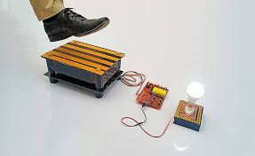

The Footstep Power Generator is an innovative energy-harvesting system that converts mechanical energy from footsteps into electrical energy. With the increasing demand for sustainable energy solutions, this project aims to utilize human motion in crowded areas like railway stations, shopping malls, and schools to generate power. The system employs a mechanical-to-electrical conversion mechanism, ensuring an efficient and eco-friendly energy source.
